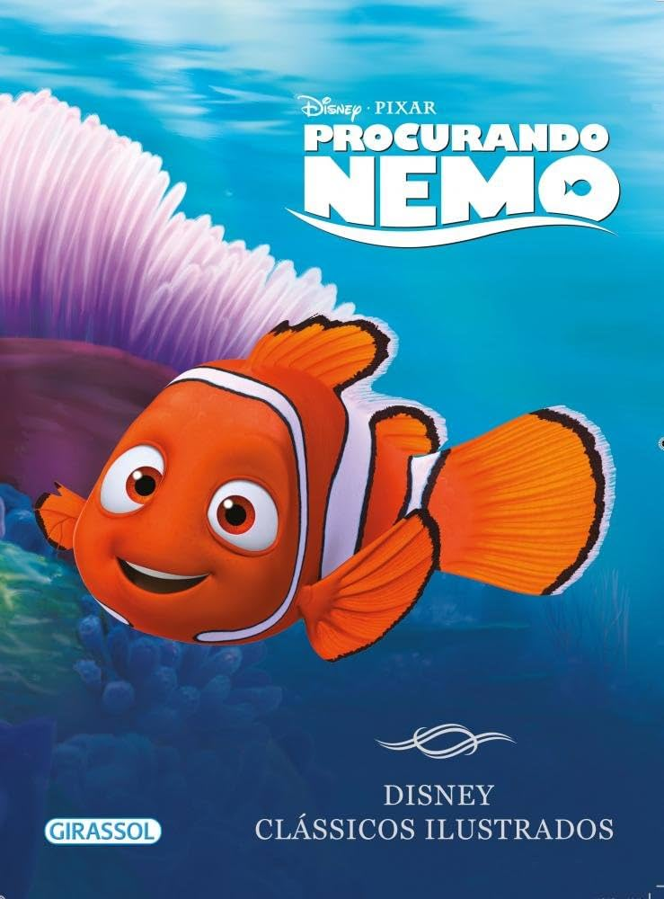

Procurando Nemo conta a história de Marlin, um peixe-palhaço superprotetor que atravessa o oceano em busca de seu filho Nemo, capturado por mergulhadores. Durante a jornada, ele conhece Dory, uma peixe divertida e esquecida, vivendo várias aventuras pelo mar.
O filme mistura aventura, emoção e humor de forma equilibrada, conquistando crianças e adultos. A animação impressiona pelos detalhes do oceano, enquanto a relação entre Marlin e Nemo transmite importantes mensagens sobre família, confiança e amizade.

Veja o trailer do filme° Nemo — Um peixe-palhaço curioso e aventureiro que quer provar sua coragem.
° Marlin — Pai de Nemo, conhecido por ser muito protetor e cuidadoso.
° Dory — Uma peixe cirurgião azul com problemas de memória, mas muito amigável e otimista.
° Tartaruga Crush — A tartaruga tranquila e engraçada que vive na corrente marítima.
° Bruce — O tubarão que tenta mostrar que “peixes são amigos, não comida”.